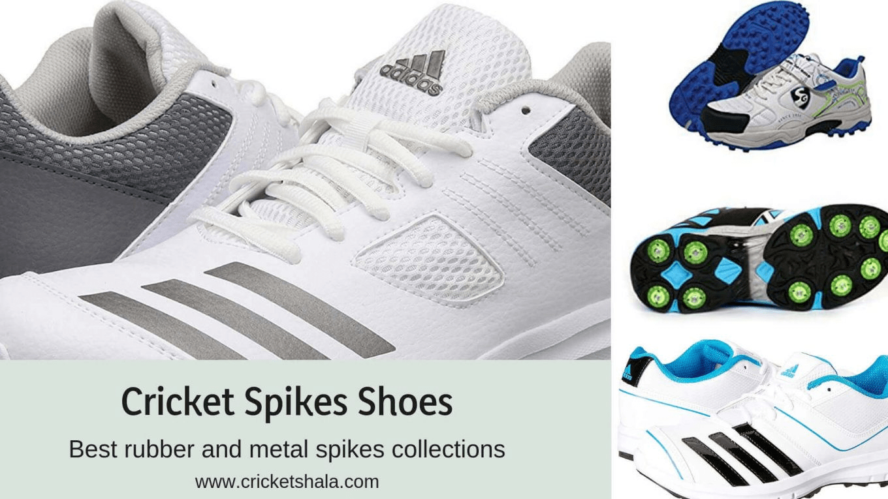
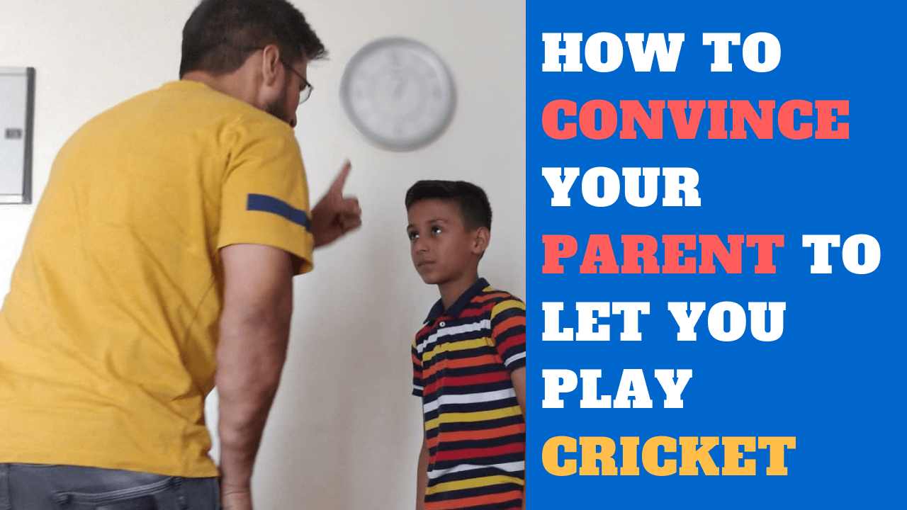
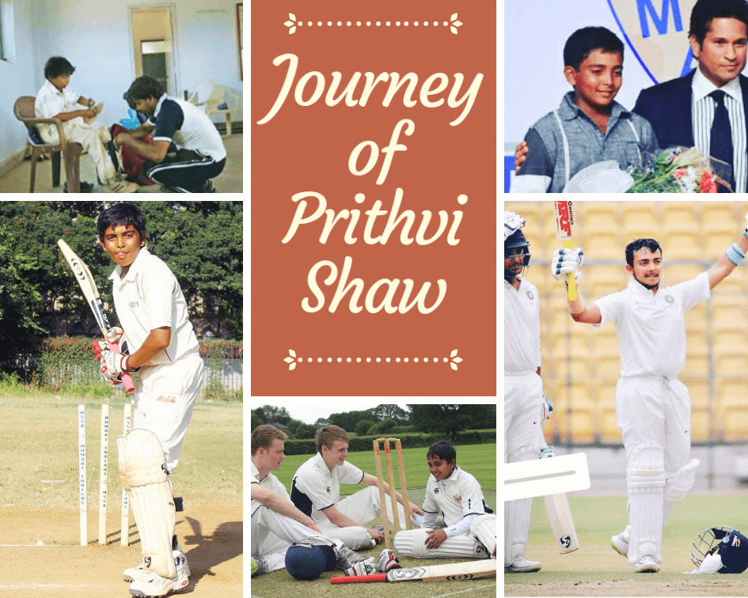
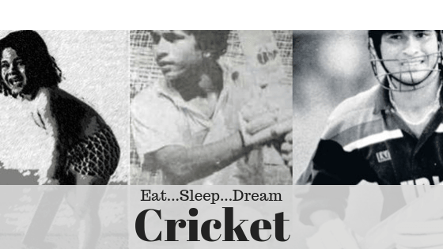
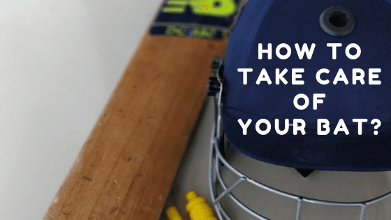
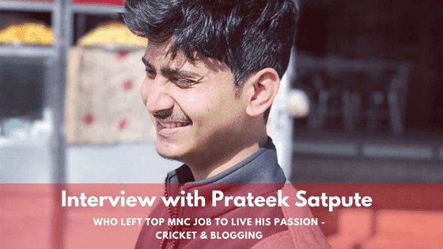
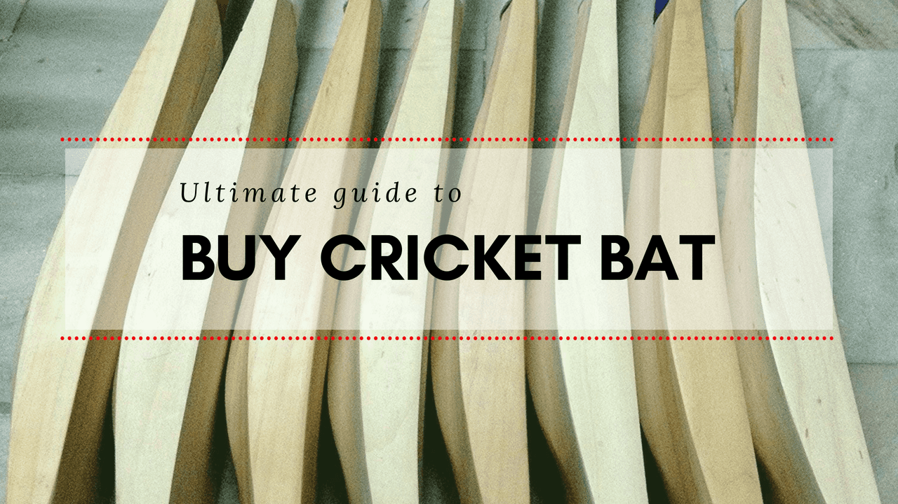
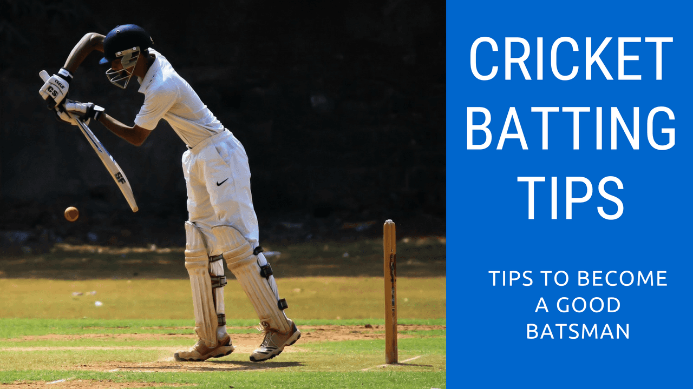
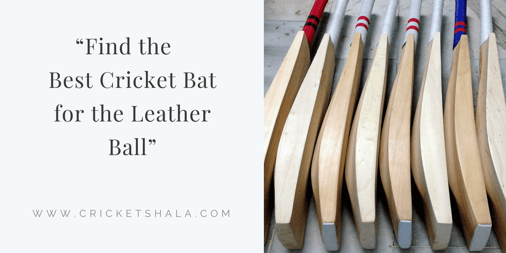

home
tips & tactics
product reviews
interview & bio
Do you want to
improve your cricket skills ?
finds the drills, basic & coaching videos every weeek directly in your
in box

cricket spikes shoes - Best rubber and meatel spikes collection in 2019
what you look when you go to buy your cricket spikes shoes? Well,i feel many of the players especially
Continue
Speaktakom power bat sticker -Anil kumar $ micfrosoft a making a smart cricket bat sticker
Anil kumar - he is a former Indian Cricket and captian of test and ODI team. He is the third .
Continue

how to convince your parents to all you to play cricket
you look dream every day and night to become a cricketer, but your parent doesn't allow you to play, they
Continue

prithvi shaw biography - All about him from childhood to international cricket
In a nation of 1.3 billon people, you will hardly find an individual, who does not watch or support cricket.
Continue

How to become cricketer in India - a proven strategy
Do you have a DREAM to become a cricketer ? Are you a parent like me who looks DREAM for kids
Continue

Cricket bat knocking - How to knock in & oiling of a cricket bat
A bat is your most priceless cricket gear, isn't it? when you went to buy a bat ,you should have .
Continue

Interview with Prateek Satpute - who left top MNC job to lives his passing about cricket and blogging
If ypu are a cricket lover and went to be update with the latest stories of thecricket , Parateek's blog
Continue

ultimate guide to buy cricket bat in 2018
What things to do you look when you buy a bat? You go to the shop near to you ,ask the
Continue

Cricket batting tips - ;earn batting skills in cricket
I love cricket and my son too. my 9-year-old son goes to the crocket academy for pratice and sometime me
Continue

Best cricket bat for the lather ball in 2018
selecting the bat was always a big hassle for me, assuming same for your either. There are a lots of
Continue